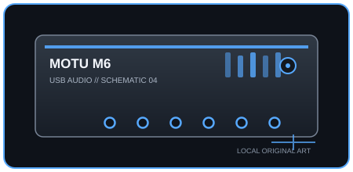

[ INDIVIDUAL COMPONENT // SOUND ]
MOTU M6
A 6-in/4-out USB interface with four mic/line/instrument combo preamps, front-panel metering, and two headphone outputs.

IDENTIFICATION: Manufacturer/model: MOTU M6 USB-C audio interface. Verify the full model and hardware/firmware revision on the unit; similarly named generations may have different ports, drivers, or channel counts.
Specifications
| Catalog subcategory | USB audio interfaces |
|---|---|
| Model / SKU identity | MOTU M6 USB-C audio interface; model-level identity, not a retailer bundle SKU. |
| Analog, digital I/O and host channels | Six analog input channels: four combo mic/line/Hi-Z inputs and two additional line inputs; four balanced TRS line outputs, two independently controlled headphone outputs, and MIDI DIN I/O. USB playback/recording channel counts depend on the host driver and routing. |
| Conversion, sample rate and bit depth | 24-bit; 44.1, 48, 88.2, 96, 176.4, and 192 kHz supported. |
| Mic preamps / phantom power | Four combo inputs have mic preamps and selectable +48 V phantom power; the first two also support instrument-level input. Use phantom only with equipment designed for it. |
| USB generation / class compliance | USB-C connector with USB 2.0 High-Speed audio transport; external DC supply is included/available for standalone operation and some mobile-host configurations. |
Drivers, host compatibility & latency
- MOTU drivers provide Windows ASIO/WDM and macOS Core Audio support; class-compliant operation is available for supported iOS/iPadOS hosts. Check current OS minimums and whether a mobile host needs a powered adapter.
- Direct monitoring and loopback are available; DAW software monitoring remains dependent on driver, buffer size, sample rate, and CPU load. Low buffers improve response but can produce clicks or dropouts on busy systems.
- For predictable recording, match the interface and DAW sample rates, select the model-specific manufacturer driver where required, test the intended buffer under real session load, and retain a higher-buffer fallback for dense projects.
Identification and preservation notes
Photograph the underside model label and connector panel; record serial/model identifiers, revision, firmware, included power supply, optical mode, and installed driver version. Do not infer channel count or supported sample rate from a connector or product-family name alone.
Sources & further reading
- MOTU — M6 product specificationsManufacturer specification and feature overview for the M6.
- MOTU — M Series User Guide (PDF)Manufacturer manual covering setup, host compatibility, drivers, and operation.
Manufacturer documentation is the authority for exact revisions and supported hosts. Verify regional SKU and operating-system support against the physical unit.